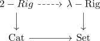
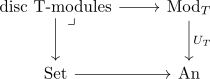
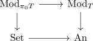

YTM 2026 - decategorification of algebraic theories and lambda rigs
Talk
- $\lambda$ rings: $G$ a group, k field of characteristic $0$, $\mathrm{Fun}(\mathrm{BG}, \mathrm{Vect}_{k}^{\mathrm{f.d}})$
- then: $\pi_0(\mathrm{Fun}(\mathrm{BG}, \mathrm{Vect}_{k}^{\mathrm{f.d}})$ is the representation ring of $G$
- but: exterior power: $\Lambda^n:$ get \begin{align*}
\lambda^n: R(G) \rightarrow R(G) \end{align*} satisfying relatinos coming from repr. theory
- get (after group compeltion ?) a lambda ring structure
- lambda ring
- $2-rig$ is a cauchy complete symmetric monoidal category
- cauhcy complete
- theromes $\mathcal{C}$ be a 2-rig., then $\pi_0(\mathcal{C})$ (?) admits a commutative rig structure that lifts to a $\lambda$ ring structure after group completion
- should be some structure before group compeltion (?)
- alternatively: $\mathrm{sym}^n$
- also possible: schur functor:
- take a representation, tensor with $W^{\otimes n}$ and take quotients
- schur functor operations (after group completion) come secretly from $\lambda^n$
- before group completion ~> may be different structure
- Schurr-Witt comonad $W^{\mathrm{sch}} = \mathrm{Hom}_{\mathrm{Rig}}(\Lambda^{\mathrm{sch}},-): \mathrm{CRig} \rightarrow \mathrm{CRig}$ and denote \(\lambda\)-rig as comodules over $W^{\mathrm{sch}}$
- theorem: $\pi_0: \mathrm{Cat} \rightarrow \mathrm{Set}$ (passing to groupoid core, then $\pi_0$) admits a lift

- forgetful functor from lambda rings to cring ~> admits both left and right adjoint (rihgt adjoint: witt vectors ?)
decategorification of algebraic theories:
decategorification: foregtting fro mcoherent algebraic theories to ordinarey algebraic theories
- e.g. passing from monads on $\mathrm{An}$ to monads on $\mathrm{Set}$

general monads on $\mathrm{An}$ can encode operations with non-discrete arities summing over $BG$
A monad $T$ on $\mathrm{An}$ is called algebraic if its underlying endofunctor presreves sifted colimits
- leverages $\mathrm{An}(\mathrm{Fin}) \simeq \mathrm{An}$
- $\pi_0(-)$ preserves products
let $T$ be an algebraic monad on $\mathrm{An}$, then $\pi_0 T: \mathrm{Set} \rightarrow \mathrm{Set}$ admits a monad structure such that

beck-chevalley condition holds for the sqare
- algebraic approximation:
- monads on $\mathrm{An}$ ~> gives an algebraic approximation to an algebraic monad on $\mathrm{An}$ (preserving sifted colimits)
- "forget all non-finite & non-discrete arities, pass to animation"
back to lambda rigs
$2-\mathrm{rig}$ to $\mathrm{Cat} admits a left adjoint
- forget to anima
~> induces a monad on anima
- algebraic approximation: and apply $\pi_0$ -
\begin{align*}
\mathrm{Mod}_{T-{\mathrm{Set}}} \cong \lambda-\mathrm{Rig}
\end{align*}
rune et al:
- lawvere theories <~> algebraic monads
- rep. theory heavy